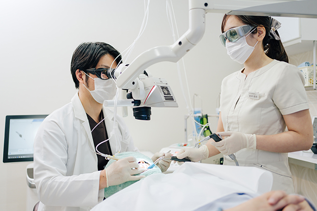
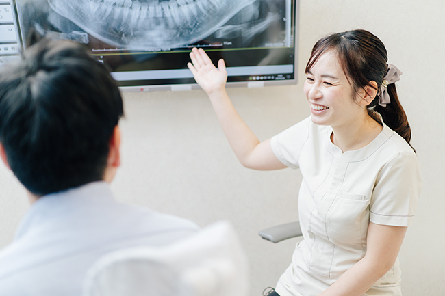
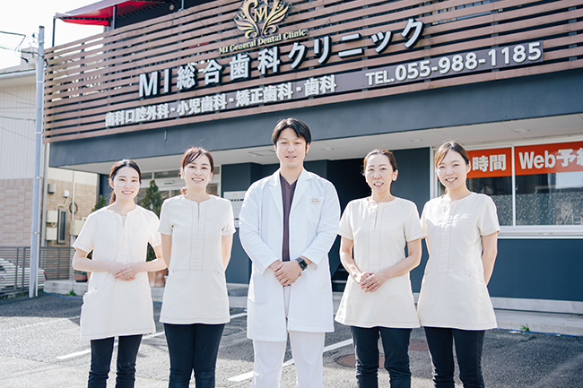
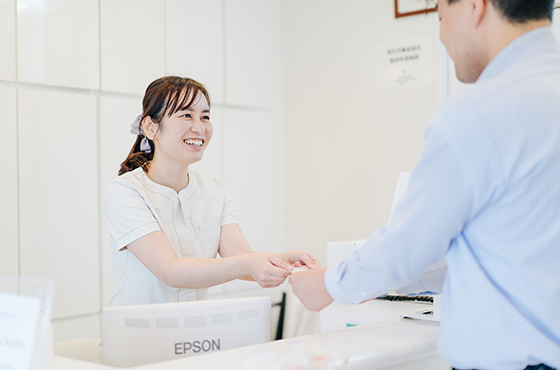
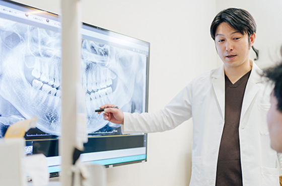
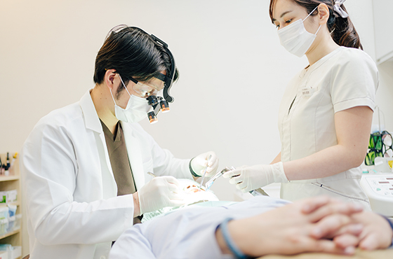

医院コンセプトと診療の流れをご紹介します
静岡県駿東郡長泉町の歯医者で、三島駅・下土狩駅近くの「MI総合歯科クリニック」では、お口まわりのトラブルの治療や定期検診を通しての予防により、患者様と長いおつきあいをしながらお口の健康をサポートし、また人生においての生活の質（QOL）を高く保つことを考慮して、いつまでもご自身の歯でお過ごしいただきたいと考えています。こちらでは、当院が掲げる医院コンセプトと、診療の流れをご紹介します。
コンセプトを動画でご紹介します
理事長インタビューをはじめ、患者様への想い、治療の考え方をご紹介します。大切にしているコンセプトの動画ですのでご覧ください。
3つの医院コンセプト
1：できるだけ削らない・できるだけ抜かない

1：できるだけ削らない・できるだけ抜かない
天然歯に勝る人工歯は残念ながら存在しません。そのため当院ではMI（ミニマルインターベーション）治療をコンセプトに掲げております。MIとは「可能なかぎり歯を削らない、可能なかぎり歯の神経を抜かない」という治療法で、2000年に国際歯科連盟によって提唱されました。自分の歯を失わないように残し、一生、ともに歩んでいけるようにしっかりサポートいたします。
2：患者様のQOLの維持・向上に努める

2：患者様のQOLの維持・向上に努める
QOL（クオリティ・オブ・ライフ）とは、「生活の質」または「人生の質」のことで、人間らしく充実していて、幸せを感じられる生き方をおくることを大切にする考え方です。お口の健康は、QOLの維持・向上につながります。その健康のために、当院では、ただ“治す”のではなく、一人ひとりの患者様の生活に寄り添い、末長いおつきあいで「人生の質」の向上をお手伝いできるような歯科診療を目指しております。
3：マイナス1歳から生涯にわたって健康をサポート

3：マイナス1歳から生涯にわたって健康をサポート
歯の寿命は本来長いのですが、その寿命をまっとうせずに抜け落ちてしまうことが多いのが現実です。そこで当院では、お口の健康を一生かけて守れるように、妊婦さんのお腹の中にいる「マイナス1歳」のときからスタートするデンタルケアをご提案します。みなさんの口腔内の健康を生涯にわたって維持できるよう、妊婦さんからお腹の赤ちゃんのお口の健康につなげ、そして子どもから大人へ、患者様と私たちが一緒に歳を重ね、歩んでいきたいと考えています。
診療の流れ
-
STEP1:受付

- まずはご予約ページ、もしくはお電話（055-988-1185）にてご予約のうえ、受付までお越しください。初診の際には問診票へのご記入をお願いします。また、保険証などもあらかじめお手元にご用意ください。
-
STEP2:初診
-
患者様にご記入いただいた問診票をもとに、処置を行います。
- 問診患者様のお悩みやご要望、そのほか過去に受けた治療などについてお伺いします。
- 応急処置痛みや腫れなどがあり、早急な処置が必要な場合には応急処置を施します。
- 精密検査口腔内を診察し、必要がある場合にはレントゲン撮影や歯型採取などの精密検査を行います。
-
STEP3:カウンセリング

- 検査結果をもとに現在の口腔内の状況、また今後の治療方針・計画などを丁寧にご説明します。この際、費用などもお伝えいたしますのでご安心ください。また、ご不明点などございましたら遠慮なくご質問ください。
-
STEP4:治療

- 治療の内容・費用にご納得いただけましたら実際に治療を開始いたします。治療中であっても、気にかかることがございましたら何なりとお尋ねください。
-
STEP5:定期検診
- 治療後には健康な口腔内環境を維持するため、定期検診をおすすめしております。一人ひとりに合わせたセルフケアのポイントなどを、専門家の視点からしっかりアドバイスいたします。